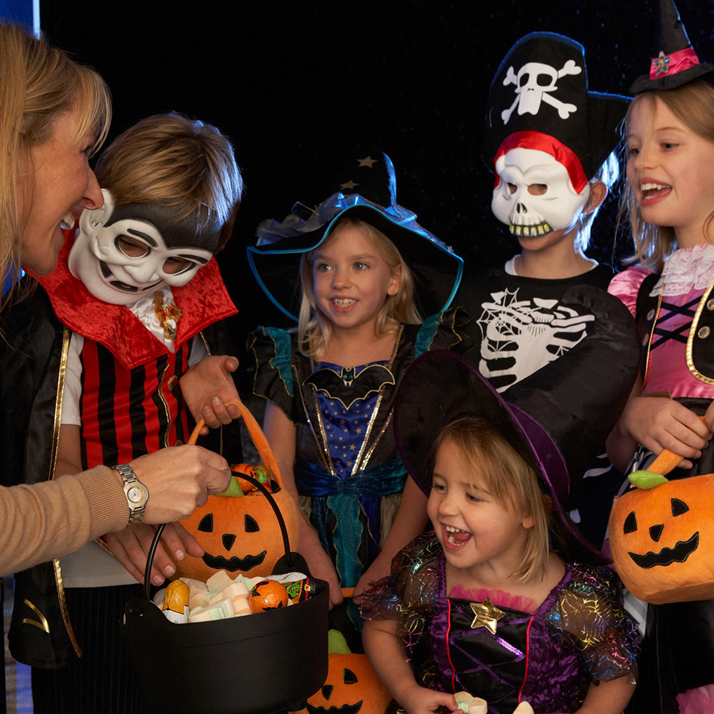

 Halloween is a time of celebrating all things scary. From spooky costumes to delicious sweet treats, Halloween is a versatile holiday with space for everyone to celebrate. Below, you will find DIY costume ideas, ethical candy options, and the best trick or treating places in Tacoma. Enjoy!
This costume is an easy hit! To make it, gather these simple items:
This one is even easier than the first. Here's what you'll need:
For all you dormers out there, this costume may represent your favorite Uber Eats Order. Luckily, it's super simple to recreate! The components are as follows: